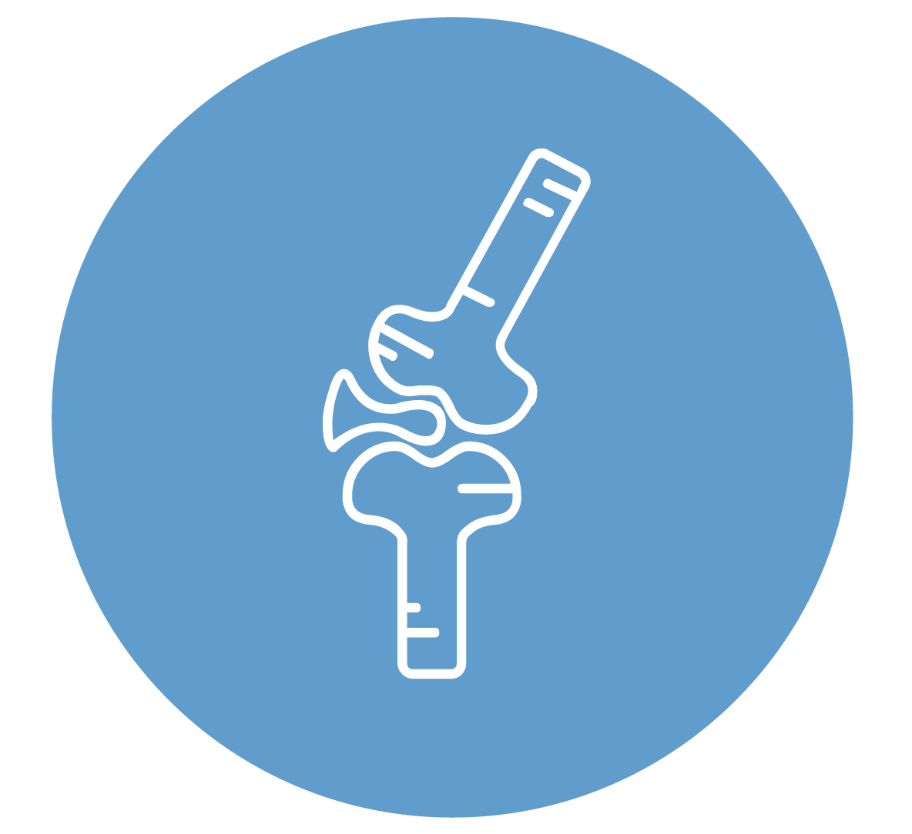
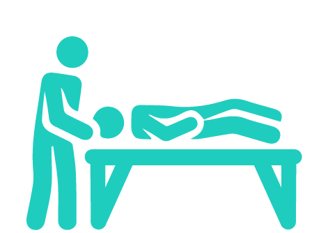
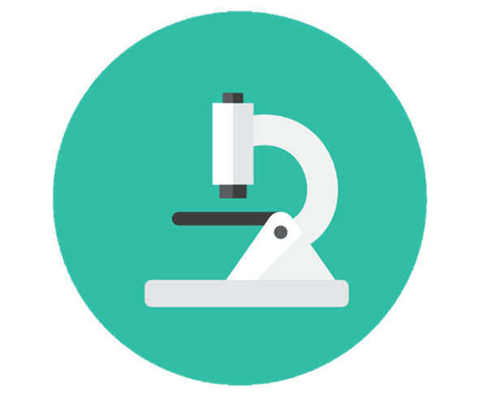

General medicine
General medicine is the first level of medical care and is essential for prevention, detection, treatment and monitoring of stabilized chronic diseases, taking responsibility for the patient as a whole.
Ambulatory surgery
Outpatient surgery requires careful selection of patients and surgical procedures to be performed. To select which patients can be Operating on an outpatient basis requires an adequate preoperative surgical and anesthetic evaluation.
Nutrition

Health professionals who are experts in food, nutrition and dietetics. Responsible mainly for the nutritional-dietetic diagnosis general and specific, as well as the nutritional-dietary treatment of diseases
Psychology
Experts in behavior change, who teach psychological resources of people to in order to solve the problems of your daily life, in order to facilitate adaptation to the context in which they live and feel good in the short, medium and long term.
Orthopedics
Medical specialty dedicated to correcting or avoiding deformities or traumas of the musculoskeletal system of the human body, through surgery (orthopedic surgery), appliances (called orthoses), or body exercises.
Physiotherapy
Discipline of health science that offers a therapeutic treatment and non-pharmacological rehabilitation to diagnose, prevent and treat symptoms of multiple ailments, both acute and chronic, through therapeutic exercises and physical agents such as electricity, ultrasound, laser, heat, cold, water, manual techniques such as stretching, tractions, massage therapy.
Cardiology

It is the medical specialty with invasive and non-invasive procedures for the treatment of different heart diseases. This is made up of heart muscle, valves, arteries, and the electrical system. A patient may have disease of one or all of the components of the heart, hence the respective subspecialties.
Laboratory
Carrying out research, experiments, sampling and scientific work, technological or technical; it is equipped with measuring instruments or equipment with which experiments are carried out, diverse investigations and practices, according to the branch of science to which it is dedicated.
Psychiatry
Medical specialty dedicated to the study of mental disorders of genetic or neurological origin with the goal of preventing, evaluating, diagnosing, treating and rehabilitating people with mental disorders, and ensuring the autonomy and adaptation of the individual to the conditions of their existence